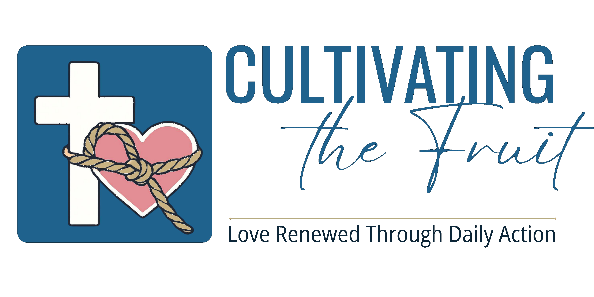
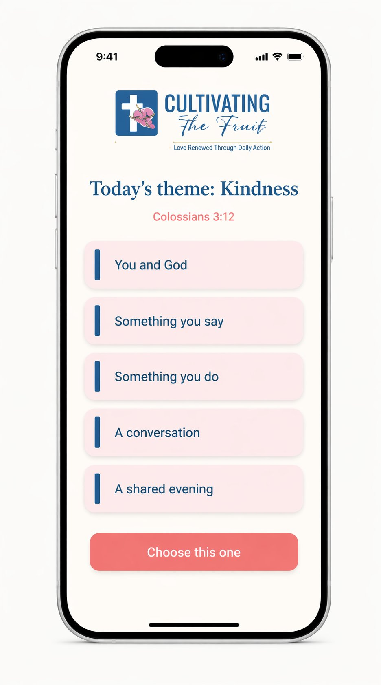
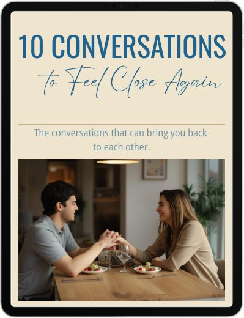
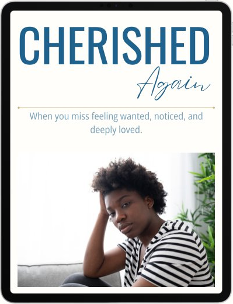
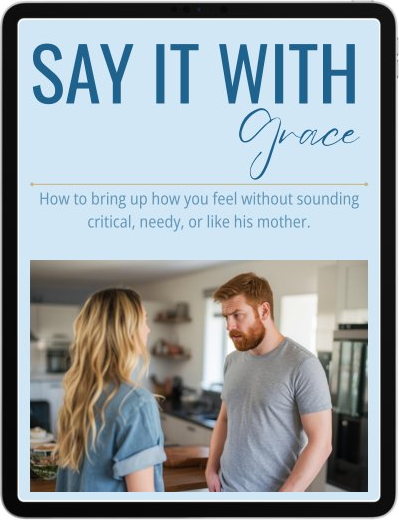
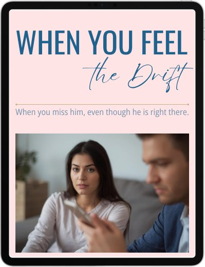

For the wife who has given everything to her children, her home, and her husband. And has started to wonder when someone is going to give something back to her marriage.
Cultivating the Fruit gives you one Scripture-led action each day to help you bring back closeness, tenderness, and that husband-and-wife feeling that has been missing, even if he thinks everything is fine.

Does any of this sound familiar?
You poured yourself into your children, your home, the invisible work of keeping everything going. Something shifted along the way, and the marriage got what was left of you at the end of the day.
There was no specific fight or crisis. Just life filling up around the two of you until most of your conversations were about the children, the schedule, or the bills.
You are not alone. And it does not have to stay this way.
Before we describe what the app does, we want to say something honest.
You may already be the one who notices. The one who reads the books and initiates the conversations and tries to carve out time together. The last thing you need is another thing to carry.
This is the difference: you do not need another list of things to carry. You need one right thing to do tonight.
You probably already make him a coffee. This app is not about the coffee. It is about the moment you choose to make it because you love him, because you are choosing it consciously, not on autopilot. That shift, from exhausted habit to deliberate love, is what starts to move things. Not overnight. Over months. But it starts in a single moment.
Here is something many men do not fully understand about their wives: for many women, emotional closeness and physical closeness are not separate things. They tend to arrive in that order. Closeness through the day, a message, a moment, a question genuinely asked, is what makes the evening feel different.
The app is built around that sequence.
And when one spouse begins to change the tone of a home, research suggests the other often responds over time. This does not guarantee a particular outcome, and it does not make the whole marriage your responsibility. It simply means your choices are not wasted, even when you begin alone.
You do not have to begin alone. The app has a partner connection feature. He can join, see your daily theme, and choose his own action for the day. We will give you a simple script for how to invite him in a way that feels like an opportunity rather than a problem to solve.
But if he is not ready, you can begin today. This is about being faithful in your part, and knowing you did everything you could, whatever the outcome.
What a day in the app actually looks like
This is not a reading plan. It is not a list of tips. Every single day is built around one verse from Scripture and one quality from the Fruit of the Spirit: love, joy, peace, patience, kindness, goodness, faithfulness, gentleness, self-control.
The app tracks which quality you are working on over time, so you are not just doing kind things at random. Over the weeks and months, you gradually cultivate every quality that Scripture says love looks like in practice.
Each day gives you five options. You choose ONE.
A reflection, a journal prompt, or a prayer. Before anything goes toward your marriage today, you spend a moment in your own heart, asking God to work in you, not just through you.
Something warm and specific to him. A message, a word in person, something that lets him know you see him. An appreciation, an encouragement, an expression of desire. Your voice, offering something good.
Five minutes. A small practical act that makes his day easier. Not because you have not been doing things for years, but because today you are choosing it consciously, as an act of love, knowing why you are doing it.
Twenty minutes, with a guided question designed to move you past logistics and back into actual conversation. The kind that used to come easily before life got so full. These prompts are built on research into what actually makes couples feel close: understanding each other's inner world, sharing dreams, revisiting what brought you together, and exploring what you each need to feel loved.
At least an hour, designed to move you from side by side to genuinely together. Some nights that means going out. Some nights it means being in the same space with intention instead of habit.
You choose one option. But some days, when energy and time allow, more than one will feel natural.
Why we built this
I have watched marriages fall apart my entire life. Including my own.
I grew up Catholic, deeply believing. In my teenage years I found a Christian church that felt like home. Then life happened: university, travel, the years of being young and busy. I slowly moved away from my faith.
I got married. It ended. There were reasons, as there always are, but the way I could see it from where I stood: we had become housemates. Functional, polite, doing life together. But something essential was gone, and by the time I understood what had happened, it was already too late to find our way back.
When I looked around, I realised I was not alone in this. Half the marriages in my wider family had ended. In my immediate family of five siblings, four of us married, and three of those marriages ended in divorce. At my children's school, in my community, among people I respected and loved, it was everywhere. Good people. Faithful people. Marriages that had simply drifted until there was nothing left to hold onto.
I want to be honest about something. In some of those marriages, there were things happening that no app, no programme, and no amount of effort from one person was going to fix. But I also believe that many marriages end because of slow drift. Because nobody knew what to do with the ordinary flatness, and it was never bad enough to seek help until it was too late.
I did not want that for anyone else.
I spent five years in therapy, coaching, and healing. I trained as a coach and read widely: the research, the theology, the clinical frameworks. What I kept noticing was how rarely any of it was translated into something a normal woman could actually use on a Tuesday evening after a hard day.
My sister is a church chaplain. We had talked for years about whether there was a way to build something that put real, grounded, Bible-based help into everyday life. The technology to do it affordably was not there until recently. When it was, we decided it was time.
I cannot promise this app will save your marriage. What I can tell you is that your choices matter. What you do today shapes what your marriage looks like in six months. The research says so. So does Scripture.
What I want for you is a marriage that feels alive. One where you dance together and hold hands and look at each other the way you used to. And whatever the outcome, I want you to know you did everything you could.
That is what this is for.
Cathryn
Founder, Cultivating the Fruit
Everything you get
Each day opens with a Bible verse that sets the tone and theme for your actions. Read it in the app, or open your own Bible to sit with the wider passage. Every action that follows flows from that day's biblical theme.
Five specific, practical actions drawn from the Fruit of the Spirit and built for the real texture of marriage. They change daily, small enough to do in the middle of a full day, and specific enough that you will feel the difference in how you move through the week.
The app does not demand a specific schedule or a commitment you cannot keep. You choose whichever of the five options fits where you are today. One action. Done. That is the whole daily rhythm.
Daily guided actions designed to bring back tenderness, affection, spark, delight, emotional closeness, and that husband-and-wife energy, for a marriage that is basically okay but could be so much more alive.
A gentler, more careful daily path for marriages already in a harder or more fragile season. It works the same way, but with more care for marriages that already feel bruised. Included with your subscription.
Any updates added to the app during your 12 months of access are included. New content, new features, and any new relationship streams if and when they launch.
The next relationship category being built into the app. If it launches during your 12 months of access, it is included at no extra cost.
Why this is different
There are plenty of Christian marriage resources. Most of them give you good information. The missing piece is usually not knowledge. It is turning that knowledge into something you actually do today, and again tomorrow, and the day after that.
This app gives you one clear, Bible-based action every day. You do not have to figure out what to do. It is already there when you open it.
A lot of wives want to invest in their marriage, but their husband is not in the same place right now. You can still begin. One motivated spouse starting is not the same as one spouse carrying everything. It is simply one person choosing to love well, day after day, whatever the outcome.
Does it actually make a difference when one spouse starts alone? Here is what the evidence shows.
One person's behaviour change influences their partner's. Studies consistently find that when one spouse improves their emotional tone and actions, the other tends to follow over time.
Homish & Leonard, NIH (2008)
A wife's supportive behaviour predicts lower marital stress twelve months later. Research measuring couples over time found that wives' supportive behaviour predicted a measurable reduction in their partner's marital stress a year later.
Fincham & Beach, PMC (2010)
Husbands who accept influence from their wives have happier, more stable marriages. Gottman's longitudinal research found this to be one of the most consistent predictors of long-term marital satisfaction and stability.
The Gottman Institute
Wives who regulate their own emotional responses show increased marital satisfaction over time. A 13-year longitudinal study found that wives who moved out of negativity faster had better communication and higher marital satisfaction.
Bloch, Haase & Levenson, PMC (2014)
None of this means one spouse can control a marriage, or that effort from one person guarantees a particular outcome. What the research shows is that you are not powerless. Your choices have real, measurable effects on the relationship you share, even when you are the only one making them.
Your investment
For less than the cost of a weekly coffee, you get one clear action each day, already decided for you, so you can stop putting it off and begin.
12 months access · less than AU$1.52 a week
(Approx. US$50)
Plus these companion guides
Written for Christian wives, for the specific places where it gets hard.

Most nights, by the time you finally sit down together, there is nothing left but tiredness and the day's leftover admin. These ten guided conversations help you get past kids, calendars, and jobs to the things that made you feel close in the first place, without making it feel forced, awkward, or like a counselling exercise.
Available as add-on
You are carrying the mental load, keeping life moving, and somewhere along the way you stopped feeling like his wife and started feeling like the one who runs everything. This guide helps you step back from that role where it is hurting your marriage, and find your way back to each other as husband and wife, not just two people managing a household.
Available as add-on
You have things you need to say, but you already know how easily it can come out sounding critical, emotional, or heavier than you meant. This guide helps you say what needs saying without sounding like his mother, starting a fight, or burying it again.
Available as add-on
You can feel the distance, even if he seems perfectly content and nothing looks wrong enough to call a crisis. This guide is for the woman lying awake at night wondering if she is imagining it, overreacting, or already losing something precious by staying silent.
Available as add-onWhen you subscribe through a participating church, a portion of your subscription fee goes directly back to that church community to support their good work, or to a national Christian organisation of their choice. It is a simple way to invest in your marriage and support your church at the same time.
Try the app for 30 days. Use both streams. Choose one action each day. Sit with the daily Scripture. See how it fits into your life.
If it is not helping and you are not finding it practical, useful, and worth the small daily investment, simply email us and we will refund your purchase in full. No forms. No questions. No hassle.
Cultivating the Fruit is not counselling, therapy, pastoral care, or a substitute for serious professional support where that is genuinely needed. It is a daily Scripture-based tool for Christian marriages.
Your questions, answered honestly
"My husband probably will not do this with me."
That is okay. The app is designed so that one motivated spouse can start, use it well, and see real benefit without needing the other person to sign up or even know you are using it. If he eventually wants to join, great. You do not have to wait for him to begin.
"We're doing okay. Do we actually need this?"
This is an everyday tool for marriages that are good but want to be more than good. The marriages most at risk of slow drift are often the ones where nothing seems wrong enough to act on. Strengthening a good marriage is wisdom, not overreaction.
"I have bought Christian marriage resources before and never finished them."
This is different in structure. There is no programme to work through in order. You open the app, you read the verse, you choose one action, and you go and do it. That is the whole cycle. It is built to be done, not just read.
"I do not want to feel like this is all on me."
One spouse choosing to begin is not the same as one spouse carrying the whole marriage. You are responsible for your own choices. Your husband is responsible for his. Those choices shape the culture of your home, and they matter deeply. But you are not responsible for controlling the outcome.
"We are actually in a harder place than just 'a bit flat.'"
The Repair stream is for you. It is inside the same app, with the same daily rhythm: a Scripture anchor, five options, one choice. It works the same way, but with more care for marriages that already feel bruised. Both streams are included with your subscription.
"How do I get the app? Is it in the App Store or Google Play?"
Cultivating the Fruit is a real app that you download and install on your phone, but it is distributed directly through us rather than through the Apple App Store or Google Play. After purchase you will receive a download link and simple instructions. It installs like any app and works on both iPhone and Android.
"Is this going to replace proper help if we actually need it?"
This is a practical daily tool for real marriages, and it is honest about what it is. It is not counselling, therapy, or pastoral care. If your situation genuinely needs deeper support, please seek the right kind of help. This app can sit alongside that, but it was built for everyday life, not crisis intervention.
"My husband is controlling, angry, or unfaithful. Is this really my responsibility?"
No. This app is for marriages where the goal is greater warmth, wisdom, connection, and strength. It is not meant to help you carry abuse, betrayal, addiction, coercion, chronic deceit, or other serious harmful behaviour on your own. Those situations are not yours to fix through better words, better attitudes, or more effort. If any of those are present, please seek wise outside support from a trusted pastor, counsellor, recovery specialist, or other qualified help. This app is not designed for crisis situations, and using it in place of real professional support could do more harm than good.
Today. In the middle of the actual marriage you have right now. That is when it begins.
The app gives you one clear, Scripture-based thing to do each day. That is how good intentions become something real.
You felt the drift first. That is an invitation to begin, with wisdom, with love, and with the confidence that God's Word can shape every step you take.
Fruit grows through cultivation. That is what this is for.